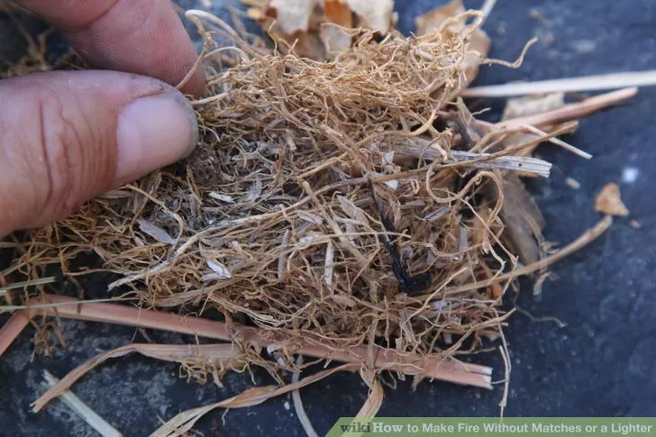
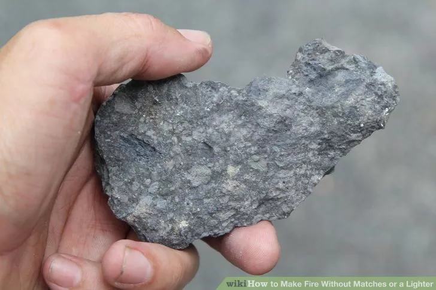
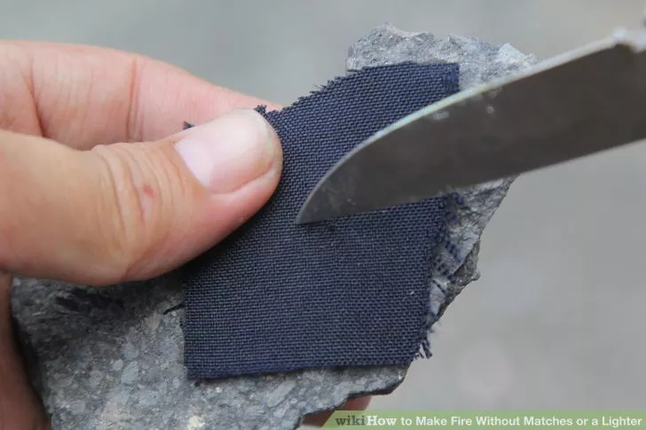
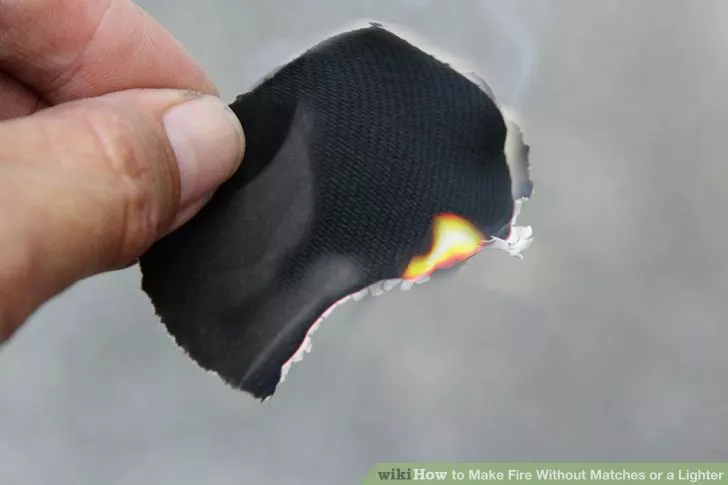
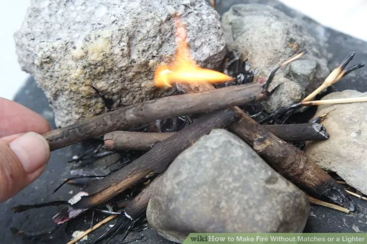

1. First make a tinder nest out of any dry plant material that easily catches fire. You can use dry grass, leaves, small sticks or bark.
2. Take your flint rock (a rock that emits sparks) and hold it between your thumb and forefinger.
3. Grab a piece of char cloth or lightweight tree fungus between your thumb and flint and quickly scrape a knife against the flint.
4. Catch the sparks with your char cloth and continue the process until the cloth flows like an ember.
5. Transfer the flowing char cloth to your tinder nest and gently blow in it to induce a flame.
